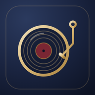

Bitácora
Plan de lectura, compras y qué leer según el mood.
iPhoneLa Taquilla
Diario de cine y series, con watchlist por mood.
iPhone
Banda Sonora
Las doce listas de Spotify por momento y energía.
iPhoneInterés compuesto
Presentación interactiva para clientes.
Ordenador